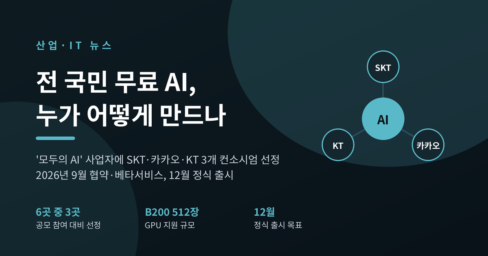
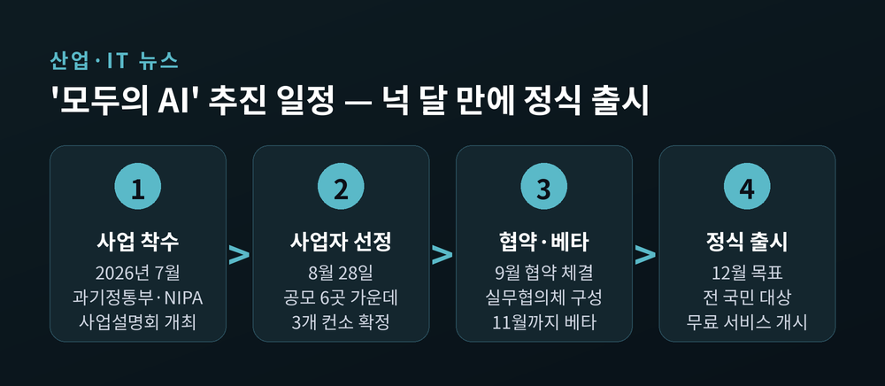
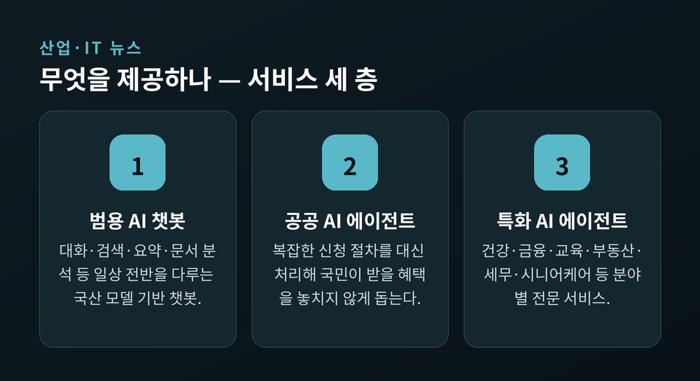
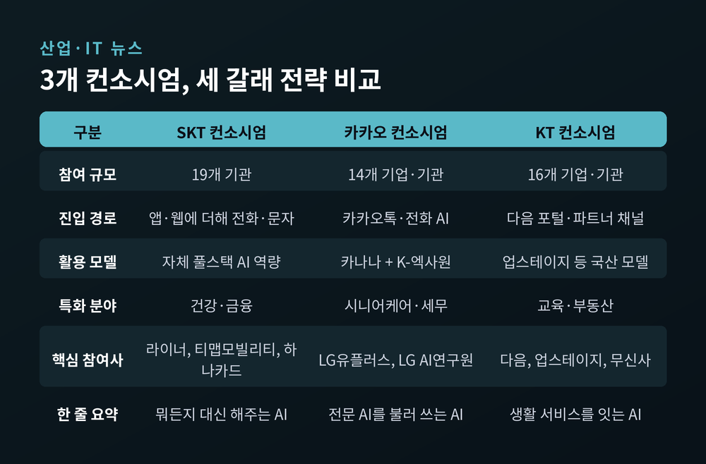
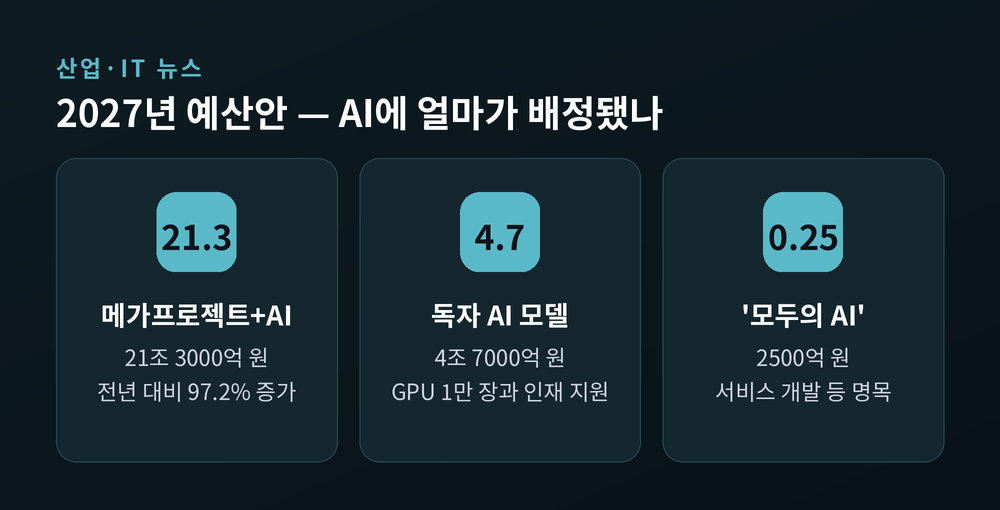
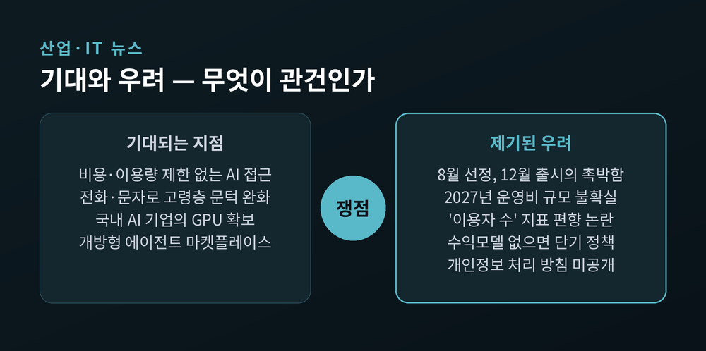

이번 글에서는 정부의 '모두의 AI' 프로젝트를 정리해 보겠습니다. 8월 말 사업자가 확정됐고, 9월에는 협약과 베타서비스 단계에 들어갔습니다. 전 국민이 무료로 쓰는 AI 챗봇이라는 구상이 실제로 어떻게 굴러가는지, 그리고 무엇이 관건인지 짚어보려 합니다.
과학기술정보통신부는 2026년 8월 28일 '모두의 AI' 프로젝트의 사업 수행기관을 발표했습니다.
공모에는 6개 컨소시엄이 참여했습니다. SK텔레콤, 엠케이디, 이스트소프트, 제논, 카카오, KT였습니다. 이 가운데 SKT·카카오·KT 3개 컨소시엄이 최종 선정됐습니다. 관심을 모았던 네이버클라우드는 공모에 참여하지 않았습니다.
평가는 두 단계로 진행됐습니다. 서면평가에서는 AI 모델과 서비스 경쟁력, GPU 활용 및 인프라 운영 계획 같은 기술 적합성을 따졌습니다. 발표평가에서는 프로토타입 영상 시연까지 포함해 서비스 편의성, 이용자 확보 전략, 품질·안전성 확보 계획, 생태계 기여 계획을 종합적으로 봤습니다.
일정은 빠듯하게 짜여 있습니다. 9월 중 협약을 맺고 실무협의체를 꾸립니다. 9월 4일 서울 한국프레스센터에서 착수 간담회가 열렸고, 세 컨소시엄이 각자의 서비스 계획과 프로토타입을 공개했습니다. 이후 11월까지 베타서비스를 거쳐 12월 정식 출시가 목표입니다.

공식 사업명은 「전 국민 AI서비스 보편적 활용지원」입니다. 이름이 길지만 뜻은 단순합니다.
제공하려는 것은 세 층입니다. 첫째는 누구나 쓰는 범용 AI 챗봇입니다. 둘째는 복잡한 신청 절차를 대신 처리해 국민이 받을 혜택을 놓치지 않게 하는 공공 AI 에이전트입니다. 셋째는 분야별 특화 AI 에이전트입니다.
정부가 내건 목표는 세 가지로 정리됩니다. 외산 AI 모델 의존도를 낮추는 것, AI 이용 격차를 줄이는 것, 그리고 2027년 이후 '전 국민 1인 1에이전트' 체계로 나아가는 것입니다.

배경훈 부총리 겸 과기정통부 장관은 착수 간담회에서 방향을 이렇게 표현했습니다. 누구나 AI를 써서 AI로 인한 편향을 없애고 "AI 기본 사회"를 만들어가는 것이 가장 중요하다는 취지였습니다. 동시에 기존에 없던 서비스와 사업 모델을 만들지 못하면 성공하기 쉽지 않다는 경계의 말도 함께 남겼습니다.
선정된 세 곳은 같은 사업을 하지만 접근이 확연히 다릅니다.
SKT 컨소시엄은 19개 기관이 모였습니다. 라이너가 특화 검색을, 신한카드·하나카드가 금융·결제를, 티맵모빌리티가 모빌리티를, 엘리스그룹이 교육을, 굿닥과 사운더블헬스가 의료·헬스케어를 맡는 식입니다. AI 보안은 에임인텔리전스가 담당합니다.
핵심은 '실행형 AI'입니다. 요청 하나로 계획 수립부터 실행, 결과 확인까지 처리하겠다는 구상입니다. 눈에 띄는 대목은 접근 경로입니다. 앱과 웹뿐 아니라 전화와 문자로도 쓸 수 있게 만듭니다. 앱 설치가 부담스러운 어르신과 디지털 취약계층을 겨냥한 설계입니다. 공식 API가 없는 매장이나 관공서는 검색으로 연락처를 찾은 뒤 전화 대행으로 연결하는 기능까지 넣겠다고 밝혔습니다. 특화 분야는 건강과 금융입니다.
카카오 컨소시엄은 14개 기업·기관이 참여합니다. LG유플러스가 핵심 참여사이고 LG AI연구원, LG전자, LG CNS가 함께합니다. 서울대학교병원, 신한은행, 루닛, 크라우드웍스, 퓨리오사AI도 이름을 올렸습니다.
진입점은 카카오톡입니다. 모델은 카카오의 '카나나'와 LG AI연구원의 'K-엑사원'을 함께 씁니다. LG유플러스와 연내에 범용 전화 AI 서비스의 라이트 버전을 내놓고 단계적으로 넓혀갈 계획입니다. 특히 PlayMCP와 AI 에이전트 마켓플레이스를 연계해, 다른 AI 기업이 특화 에이전트를 직접 만들고 시험하고 유통할 수 있게 한다는 점이 특징입니다. 특화 분야는 시니어케어와 세무입니다.
KT 컨소시엄은 16개 기업·기관으로 구성됐고 서비스명은 '이음'입니다. 다음, 무신사, 직방, EBS, 매스프레소, BC카드, 커넥트웨이브, 딥서치, 솔트룩스가 서비스 영역을 맡습니다. 모델·플랫폼은 업스테이지와 모티프테크놀로지스, NC AI, 액션파워가, 인프라는 래블업과 리벨리온, 베슬AI코리아가 담당합니다.
전략은 '연결'입니다. 다음 포털과 앱의 검색·뉴스 동선은 물론 다나와·무신사·직방 같은 파트너 채널에 AI 진입점을 심습니다. KT 통신 채널과 지니TV 같은 미디어에도 붙입니다. 새 앱을 따로 쓰지 않아도 평소 쓰던 서비스 안에서 같은 AI를 만나게 하겠다는 것입니다. 컨소시엄 참여사들의 서비스 접점을 합치면 6000만 이상 규모로 알려졌습니다. 특화 분야는 교육과 부동산입니다.
컨소시엄에 참여한 한 기업 관계자는 세 곳의 차이를 이렇게 요약했습니다. "SKT는 뭐든지 대신 해주는 AI, 카카오는 필요한 전문 AI를 불러 쓰는 AI, KT는 여러 생활 서비스를 한 번에 연결하는 AI"라는 설명이었습니다.

정부 지원의 핵심은 두 가지입니다.
하나는 컴퓨팅입니다. 선정된 3개 사업자에게 올해 엔비디아 GPU B200 512장을 지원합니다. 다른 하나는 운영비입니다. 2027년부터 정부 예산으로 전 국민 서비스 제공에 필요한 비용을 뒷받침한다는 계획입니다.
512장은 결코 작은 물량이 아닙니다. 다만 세 사업자가 나눠 씁니다. 산술적으로 한 곳당 170장 안팎인 셈입니다.
여기서 짚어둘 점이 있습니다. 이 물량이 5000만 명 규모 서비스의 추론 수요를 감당하기에 충분한지에 대한 공식 산정 자료는 공개되지 않았습니다. 게다가 에이전트형 서비스는 단순 챗봇보다 한 작업에 훨씬 많은 토큰을 씁니다. 정보를 답해주는 데서 그치지 않고 검색하고 비교하고 신청까지 대신하려면 연산이 여러 번 돌아가기 때문입니다.
혼동하기 쉬운 대목도 정리해 둡니다. 2027년 예산안에 나오는 'GPU 1만 장'은 이것과 다른 항목입니다. 1만 장은 독자 AI 모델을 학습시키기 위한 것이고, 512장은 서비스를 운영하기 위한 것입니다. 성격이 다릅니다.
국산 반도체가 어디까지 쓰일지도 관전 포인트입니다. 리벨리온은 KT 컨소시엄의 인프라 영역에, 퓨리오사AI는 카카오 컨소시엄에 참여했습니다. KT가 소개한 AI 운영플랫폼 '토큰팩토리'는 국산 AI 모델과 GPU·NPU를 통합 운영해 최적 모델을 자동으로 연결하는 구조라고 밝혔습니다. 설계에 NPU가 명시적으로 들어간 것입니다. 다만 실제 추론에서 국산 NPU가 어느 정도 비중을 차지할지는 아직 공개되지 않았습니다.
2026년 9월 1일 국무회의를 통과한 2027년 예산안을 보면 규모가 드러납니다.
내년 총지출은 820조 9000억 원입니다. 올해 본예산 727조 9000억 원보다 12.8% 늘었습니다. 역대 가장 높은 증가율입니다.
이 가운데 '3대 메가프로젝트와 AI'에 21조 3000억 원이 배정됐습니다. 전년 대비 97.2% 증가한 금액입니다. K-반도체 초격차에 3조 4000억 원, 피지컬AI 실증 등에 2조 6000억 원, 전력·용수·산단 인프라에 2조 1000억 원이 들어갑니다.
AI 모델 쪽은 이렇게 나뉩니다. 독자 AI 모델이 글로벌 최상위 성능을 갖추도록 GPU 1만 장과 데이터·인재를 집중 지원하는 데 4조 7000억 원, 그리고 '모두의 AI' 서비스 개발 등에 2500억 원입니다.
이 두 숫자는 자주 뒤섞여 인용됩니다. 4조 7000억 원은 독자 모델 항목이고, '모두의 AI'에 직접 붙은 금액은 2500억 원으로 따로 표기돼 있습니다. 다만 2027년부터 지원하겠다는 전 국민 서비스 운영비가 이 2500억 원 안에 전부 포함되는지는 공개 자료만으로 확인되지 않습니다.

'모두의 AI'만 따로 떼어 보면 그림이 반쪽입니다. 짝이 되는 사업이 있습니다.
'독자 AI 파운데이션 모델' 프로젝트입니다. 이쪽은 모델 자체를 만드는 공급 측 사업이고, '모두의 AI'는 그 모델을 국민 서비스에 태우는 수요 측 사업입니다.
2026년 8월 18일 발표된 독자 AI 파운데이션 모델 2차 단계평가에서는 업스테이지, SK텔레콤, LG AI연구원 세 팀이 통과했습니다. 패자부활전으로 합류했던 모티프테크놀로지스는 탈락했습니다.
앞선 1차 평가에서는 네이버클라우드와 NC AI가 걸러졌습니다. 네이버클라우드는 점수로는 상위 4개 팀에 들었지만 '독자성' 기준을 충족하지 못했습니다. 여기서 말하는 독자 모델이란, 해외 모델을 미세조정해 만든 파생형이 아니라 설계부터 사전학습까지 직접 수행한 국산 모델을 뜻합니다.
두 사업을 겹쳐 보면 구도가 선명해집니다. 독자 모델 3팀이 모두 '모두의 AI' 컨소시엄 안에 들어가 있습니다. SKT는 직접 주관사로, LG AI연구원은 카카오 컨소시엄에서 K-엑사원으로, 업스테이지는 KT 컨소시엄에서 각각 자리를 잡았습니다. 두 사업 모두에서 빠진 곳은 네이버클라우드입니다.
정부의 AI 지휘체계도 마침 정비됐습니다. 8월 30일 인선으로 이해민 청와대 AI미래기획수석, 하정우 국가인공지능전략위원회 부위원장, 배경훈 부총리의 3강 체제가 갖춰졌습니다. 넉 달간 이어진 공백이 끝난 셈입니다.
기대되는 지점은 분명합니다.
비용 부담이나 이용량 제한 없이 전 국민이 고성능 AI를 쓸 수 있게 되면 이용 격차가 줄어들 여지가 큽니다. 특히 전화와 문자로 접근하게 만든 설계는 고령층에게 실질적인 문턱을 낮춥니다. 예전엔 AI를 쓰려면 앱을 깔고 계정을 만들고 요금제를 골라야 했습니다. 지금 그려지는 그림은 전화를 걸거나 카카오톡을 여는 것으로 시작합니다.
국내 AI 기업 입장에서도 기회입니다. 확보하기 어려운 GPU 자원, 대규모 실사용 데이터, 그리고 향후 사업에 쓸 레퍼런스를 한꺼번에 얻습니다.
그러나 우려도 여러 갈래로 제기됐습니다.
첫째는 일정입니다. 8월 선정, 9월 베타, 12월 정식 출시입니다. 이 기간에 전 국민이 쓸 만큼 안정적인 서비스를 만들고 다듬는 것이 현실적으로 가능하냐는 지적이 업계에서 나왔습니다.
둘째는 운영비의 불확실성입니다. 2027년부터 정부 예산으로 뒷받침한다는 방침은 있지만 구체적 규모와 방식이 정해지지 않아 참여 기업들이 불안해한다는 이야기가 사업 착수 단계부터 있었습니다.
셋째는 평가지표 논란입니다. 서비스 평가에 '이용자 수'를 핵심 지표로 쓰려는 방침에 스타트업 진영이 반발했습니다. 이미 거대한 이용자 기반을 가진 대형 플랫폼에 절대적으로 유리하고, '국산 AI 생태계 다양성 확보'라는 취지와 어긋난다는 주장입니다. 실제로 일부 스타트업은 단독 참여 대신 컨소시엄에 들어가는 쪽을 택한 것으로 알려졌습니다.
넷째는 지속가능성입니다. 정부 지원에만 기대면 장기적으로 버티기 어렵고, 자체 수익모델을 찾지 못하면 단기 정책으로 끝날 수 있다는 우려입니다. 여기에 더해 민간 기업은 이용자를 잃으면 사라지지만 정부 사업은 이용자가 없어도 예산이 유지되는 한 살아남는다는 구조적 지적도 나옵니다. 이미 여러 민간 서비스가 무료 챗봇을 제공하는 상황에서 차별성이 없다면 굳이 새 서비스를 쓸 이유가 크지 않다는 견해입니다.
다섯째는 개인정보와 보안입니다. 공공데이터를 연계하고 신청·결제까지 대신하는 서비스라면 다루는 정보의 민감도가 높아집니다. 과기정통부는 착수 간담회에서 공공 AI 에이전트 연계와 개인정보보호·보안 대책을 논의 과제로 제시했고, 관계부처 협의도 별도로 진행하겠다고 밝혔습니다. 다만 구체적인 개인정보 처리 방침과 데이터 보관 정책은 아직 공개되지 않았습니다.

여기서부터는 확정된 사실이 아니라 전망입니다.
가장 먼저 드러날 것은 베타서비스의 완성도입니다. 9월부터 11월까지 이용자 의견을 받는 구간이 있습니다. 이때 나오는 반응이 12월 정식 출시의 형태를 상당 부분 결정할 것으로 보입니다.
다음은 차별화의 실체입니다. 세 컨소시엄 모두 '행동하는 AI'를 내세웠습니다. 검색과 답변에서 그치지 않고 예약·신청·결제까지 대신하겠다는 것입니다. 이 약속이 어디까지 구현되느냐가 글로벌 서비스와의 경쟁에서 갈림길이 될 것입니다. 정보를 잘 답해주는 능력만으로는 이미 자리 잡은 해외 서비스와 겨루기 쉽지 않습니다. 반면 국내 행정·생활 맥락에 밀착한 실행 능력은 해외 서비스가 쉽게 따라오기 어려운 영역입니다.
세 번째는 운영비 구조입니다. 무료 서비스라는 말은 이용자가 돈을 내지 않는다는 뜻이지, 비용이 들지 않는다는 뜻이 아닙니다. 추론 비용은 이용자가 늘수록 함께 늘어납니다. 2027년 예산이 국회를 통과하는 과정에서 이 부분이 어떻게 정리되는지가 사업의 수명을 좌우할 가능성이 큽니다.
네 번째는 생태계 효과입니다. 카카오의 에이전트 마켓플레이스, KT의 토큰팩토리, SKT의 스타트업 제휴 확대는 모두 개방형 구조를 표방합니다. 이 구조가 실제로 중소 AI 기업의 몫을 키우는지, 아니면 대형 플랫폼의 채널로만 기능하는지는 시간이 지나야 확인될 것입니다.
정리하면 이렇습니다.
'모두의 AI'는 정부가 국민에게 AI 도구를 나눠주는 사업인 동시에, 국산 AI 모델에 실사용 무대를 만들어주는 산업 정책이기도 합니다. 두 목적이 겹쳐 있어 평가도 두 갈래로 나뉩니다.
핵심은 하나로 압축됩니다 — "무료로 쓰게 만드는 것보다, 계속 쓰게 만드는 것이 어렵다."
12월에 서비스가 나오면 쓸 만하겠냐고 물으신다면, 저는 아직 답을 미루겠습니다. 베타서비스 석 달이 그 답을 대신 보여줄 것입니다.
※ 이 글은 공개된 정부 보도자료와 언론 보도를 정리한 정보 제공 목적의 글입니다. 본문에는 상장기업이 다수 등장하지만, 이 글은 특정 종목에 대한 투자 권유가 아닙니다. 투자 판단과 그에 따른 책임은 투자자 본인에게 있습니다.
※ 본문의 수치·일정·참여사 명단은 2026년 9월 8일 기준으로 확인한 내용입니다. 이후 협약 과정에서 변경될 수 있습니다.